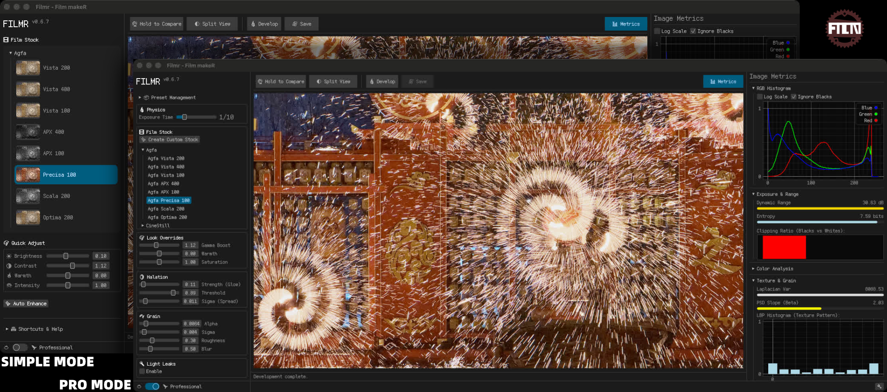

filmr
Install v0.12.0
Filmr
FilmeR / Film Rust


Filmr is a high-fidelity, physics-based film simulation engine written in Rust. Unlike simple LUT-based filters, Filmr simulates the physical properties of photographic film — from spectral light propagation through multi-layer emulsion stacks to chemical development curves, grain structure, halation, and optical aberrations — to produce output that matches the characteristic look of specific film stocks.

📖 Table of Contents
- Core Features
- Quick Start
- Installation
- Architecture
- Simulation Modes
- Supported Film Stocks
- Android Integration
- Testing
- CI
- License
🚀 Core Features
- 🔬 Full-Spectrum Simulation — Accurate mode propagates light through 81 wavelength bins (380–780 nm) using Beer-Lambert absorption and Fresnel reflections across a physical
FilmLayerStack. Fast mode uses a pre-computed 3×3 spectral matrix for real-time performance. - 🌾 Physics-Based Grain — Selwyn model: σ(D) = √(α·D + σ_read²). Density-dependent, spatially correlated via blurred noise texture, applied in both density and output space.
- 📈 H-D Characteristic Curves — Per-channel segmented curves (D-min, D-max, Gamma) with error-function or logistic sigmoid shapes for shoulder and toe rendering.
- ✨ Halation & Light Leaks — Threshold masking → Gaussian blur → additive tint blend. Configurable shapes (circle, linear, organic fire, plasma interference).
- ⏱️ Reciprocity Failure — Schwarzschild-effect exposure loss on long exposures (per-stock beta coefficient).
- 🎭 Interlayer Inhibition — Development coupling between emulsion layers via configurable color matrix (dye cross-talk).
- 🔭 Optical Effects — Depth-of-field with Petzval swirl, object-motion blur (depth-modulated), chromatic aberration, MTF softness, physiological camera tremor.
- 🎨 30+ Film Presets — Kodak, Fujifilm, Ilford, Agfa, Polaroid, and specialty stocks across 5 style variants (Accurate, Artistic, Vintage, High Contrast, Pastel).
- 📊 Diagnostic Tools —
FilmMetrics: Lab color stats, LBP/GLCM texture analysis, PSD slope, entropy, clipping ratios. - ⚡ High Performance —
rayonpixel-level parallelism; SIMDf32x4for spectrum math and Gaussian blur; optional WGPU GPU acceleration.
⚡ Quick Start
Run the Desktop App
cargo run -p filmr_app --bin filmr_ui --release # egui GUI — drag-drop, real-time preview cargo run -p filmr_app --bin filmr_cli -- --help # CLI batch processor
Use as a Library
[dependencies] filmr = { path = "../filmr" }
use filmr::{Processor, SimulationConfig}; use image::open; let img = open("photo.jpg")?.into_rgb8(); let config = SimulationConfig::default(); // Portra 400, Fast mode let result = Processor::new(config).process(&img)?; result.save("output.jpg")?;
Generate Diagnostic Charts
cargo run --example chart_diagnosis --release # Output → diagnosis_output/contact_sheet.jpg
📦 Installation
Install from Binary
macOS (Homebrew)
brew install W-Mai/cellar/filmr_app
Windows (PowerShell)
irm https://github.com/W-Mai/filmr/releases/latest/download/filmr_app-installer.ps1 | iex
Linux / macOS (Shell)
curl --proto '=https' --tlsv1.2 -LsSf https://github.com/W-Mai/filmr/releases/latest/download/filmr_app-installer.sh | sh
Build from Source
Requires Rust stable (1.70+).
git clone https://github.com/thetechgeekko/filmr.git cd filmr cargo build --release cargo test
🏗 Architecture
Input is linearised from sRGB, passed through optional lens/motion stages (micro-motion, object motion, DOF, rotation, MTF, chromatic aberration), then developed via either a fast 3×3 spectral matrix (SimulationMode::Fast) or a full physical Beer-Lambert simulation (SimulationMode::Accurate). Grain, auto-levels, and gamma encoding are applied last. See CLAUDE.md for the full pipeline diagram and module map.
🎛 Simulation Modes
Fast Mode (SimulationMode::Fast)
A pre-computed 3×3 spectral matrix converts linear RGB to film-space exposure with a single matrix multiply per pixel. ~1–5 ms for a 12 MP image on a modern CPU. Suitable for real-time preview.
Accurate Mode (SimulationMode::Accurate)
Each pixel is propagated through an 81-bin spectrum across a physical FilmLayerStack using Beer-Lambert absorption and Fresnel reflections (forward + backward pass through each emulsion layer). A binary-search normalisation step ensures consistent 18% gray response across all presets. ~20–50× slower than Fast mode but physically grounded.
Feature Flags
| Flag | Effect |
|---|---|
| (none) | Core CPU simulation, no JNI |
android |
JNI entry points + TIFF/DNG decode + safety bounds checks |
depth |
Depth Anything V2 monocular depth via rten backend |
gpu / compute-gpu |
WGPU shaders for linearisation, halation, MTF |
android,depth |
Full Android build with depth estimation |
🎞️ Supported Film Stocks
| Manufacturer | Stocks |
|---|---|
| Kodak Color | Portra 160, Portra 400, Portra 800, Ektar 100, Gold 200 |
| Kodak B&W | Tri-X 400, T-Max 100/400, Plus-X 125 |
| Kodak Slide | Kodachrome 25, Kodachrome 64 |
| Fujifilm Slide (E-6) | Velvia 50, Velvia 100, Provia 100F, Astia 100F |
| Fujifilm Negative (C-41) | Superia 100, Superia 200, Superia 400 |
| Fujifilm B&W | Neopan 400, Neopan 100 Acros |
| Ilford B&W | HP5+, FP4+, Delta 100, Delta 400, Pan F+, SFX 200 |
| Agfa | Vista 200, Ultra 100 |
| Polaroid | SX-70 |
| Specialty | Lomochrome Purple |
Each preset ships with 5 style variants: Accurate, Artistic, Vintage, High Contrast, Pastel.
Adding a Film Stock
- Copy the nearest stock in
src/presets/as a template - Set spectral params (R/G/B sensitivity peak wavelengths + widths), H-D curve parameters per channel, grain
alpha, halation settings, and color matrix - Add it to the manufacturer's
get_stocks()vec insrc/presets/and to thestock_by_key()match arm insrc/android.rs cargo test— integration tests verify all registered presets produce finite, non-clipping output
📱 Android Integration
filmr and unprocess must be sibling directories.
Prerequisites
rustup target add aarch64-linux-android armv7-linux-androideabi \ x86_64-linux-android i686-linux-android cargo install cargo-ndk # Android NDK r25c+; set ANDROID_NDK_ROOT
Cross-compile
# Film simulation only (~4 MB per ABI) cd android && ./build-android.sh # With Depth Anything V2 (~20 MB per ABI) cd android && ./build-android.sh --with-depth
The script copies libfilmr.so for all four ABIs into ../unprocess/app/src/main/jniLibs/.
JNI entry points (src/android.rs):
| Function | Description |
|---|---|
processImage |
RGBA bitmap → film simulation |
processImageWithDepth |
RGBA bitmap + depth model → film + DOF/motion |
processRawDng |
DNG bytes → Bayer demosaic + film simulation |
isDepthSupported |
Returns whether compiled with depth feature |
getAvailablePresets |
JSON list of registered presets |
getDefaultConfig |
JSON default SimulationConfig |
All JNI functions validate input array lengths (≤ 256 MB) and DNG dimensions (≤ 16 384 × 16 384) before any allocation. JSON config parse errors propagate as RuntimeException rather than silently defaulting.
🧪 Testing
cargo test -p filmr --no-default-features # fast core tests (CI gate) cargo test # full workspace including GPU tests cargo test verify_grain # grain synthesis tests cargo test accurate_integration # full pipeline round-trips cargo test chemical_stress # extreme parameter ranges
⚙️ CI
| Workflow | Checks |
|---|---|
ci.yml |
cargo check --features android, cargo check --features android,depth, cargo test, cargo audit, Android cross-compile (arm64-v8a, NDK r25c) |
rust.yml |
cargo fmt --check, cargo build --all-features, cargo clippy -D warnings, security audit |
📄 License
This project is open source and available under the MIT License.